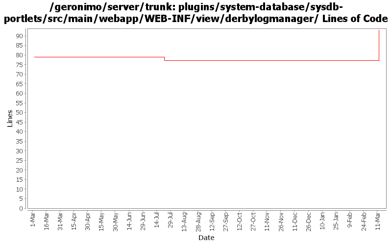

[root]/plugins/system-database/sysdb-portlets/src/main/webapp/WEB-INF/view/derbylogmanager

| Author | Changes | Lines of Code | Lines per Change |
|---|---|---|---|
| Totals | 6 (100.0%) | 27 (100.0%) | 4.5 |
| xuhaihong | 1 (16.7%) | 17 (63.0%) | 17.0 |
| gawor | 3 (50.0%) | 5 (18.5%) | 1.6 |
| dwoods | 2 (33.3%) | 5 (18.5%) | 2.5 |
GERONIMO-4517 Apply unified message display style(G-4484) to javascript alert messages. Together with the localization of these messages. Thanks for the patch, Gang Yin
17 lines of code changed in 1 file:
cleanup old forms that are not using the post method - part 2 (see Rev735155 for part 1)
1 lines of code changed in 1 file:
GERONIMO-4081 Accessibility issue: Webking scan errors against 'Check Web Accessibility(Section 508)'
4 lines of code changed in 1 file:
make log viewer look a little nicer
5 lines of code changed in 1 file:
pass paramters properly. fixes derby lob viewer portlet. (GERONIMO-3891)
0 lines of code changed in 2 files: